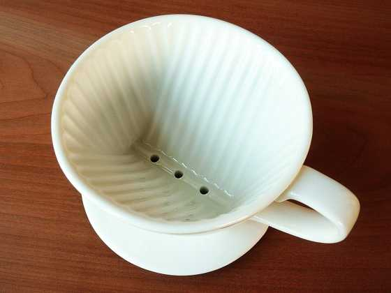
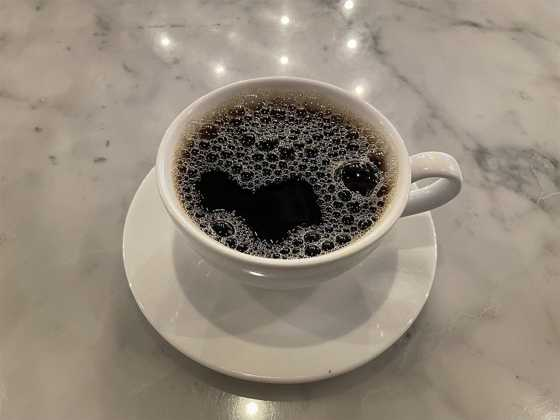
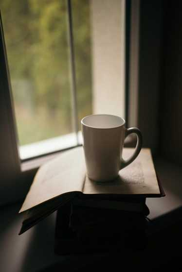

ABOUTお店のこと
「coffee懐古レトロ」は、石巻市中央にある喫茶店です。Instagramのプロフィールには「おいしいコーヒーと、ちょっと一杯もOK」とあり、コーヒーを中心に、軽くお酒も楽しめるお店として紹介されています。電子決済にも対応しているとのことです。
店名の由来やオーナーさんの想いは、公開されている情報からは確認できていません。「懐古」「レトロ」という言葉から、制作側が昔ながらの喫茶店の雰囲気をイメージしてページを作りました(制作側のイメージです)。

MENUメニュー
Instagramから、コーヒーとお酒のご提供があることが分かります。具体的なメニュー・価格は確認できていないため、準備中とさせてください。







VOICE口コミ(イメージ例)
イメージ例
コーヒーの香りにほっとして、ついゆっくりしてしまいました。
イメージ例
仕事帰りに、コーヒーを飲んでから軽く一杯。そんな寄り道ができるお店です。
イメージ例
懐かしい雰囲気で、どこか落ち着く空間でした。
※上記は制作側が作成した創作のイメージ例で、実在のお客様の声ではありません。

ACCESSアクセス
| 所在地 | 〒986-0822 宮城県石巻市中央２丁目７−３６ かわまちビル ２階 |
|---|---|
| 電話 | 準備中 |
| 営業時間 | 準備中 |
| 定休日 | 準備中 |
| @ishinomaki_coffee_retoro |